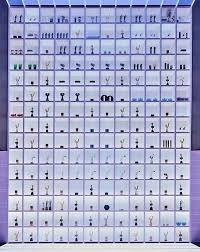

Biografía
Bangtan Sonyeondan, mejor conocido como BTS, es un grupo surcoreano formado en 2013 por Big Hit Entertainment. Compuesto por siete miembros talentosos, han revolucionado la música pop global. El grupo debutó el 13 de junio de 2013 con el sencillo 2 Cool 4 Skool, que fue bien recibido, pero no tuvo gran éxito inicialmente.
Desde su debut, el grupo ha trascendido las fronteras de Corea del Sur, convirtiéndose en un fenómeno mundial que ha roto récords de ventas, reproducciones y seguidores.
Integrantes
RM (Kim Namjoon)
Líder del grupo, rapero y compositor. Conocido por su inteligencia y habilidades de liderazgo.
Jin (Kim Seokjin)
Vocalista y visual del grupo. Famoso por su personalidad divertida y talento vocal.
Suga (Min Yoongi)
Rapero y productor. Reconocido por su profundidad lírica y habilidades de producción.
J-Hope (Jung Hoseok)
Bailarín, rapero y coreógrafo. Conocido por su energía positiva y habilidades de baile.
Jimin (Park Jimin)
Bailarín y vocalista. Destacado por su gracia en el escenario y su voz única.
V (Kim Taehyung)
Vocalista y actor. Conocido por su voz profunda y personalidad carismática.
Jungkook (Jeon Jungkook)
Vocalista principal. El miembro más joven, talentoso en múltiples áreas.
Logros
BTS lleva 13 años trabajando en la industria musical. Consiguiendo un a acumulado un total de 463 premios y 663 nominaciones en diversas ceremonias y categorías.
Siendo asi:
- Primeros artistas coreanos en ganar un Grammy Awards
- Múltiples premios Billboard Music Awards
- Récord Guinness por el álbum más vendido en Corea del Sur
- Discurso en la ONU sobre salud mental y autoaceptación
- Más de 30 millones de álbumes vendidos mundialmente
- Love Yourself: Answer
- Map of the Soul: 7
- Butter
Álbumes destacados
Algunos de sus álbumes más exitosos incluyen:
 TikTok
TikTok
 Facebook
Facebook